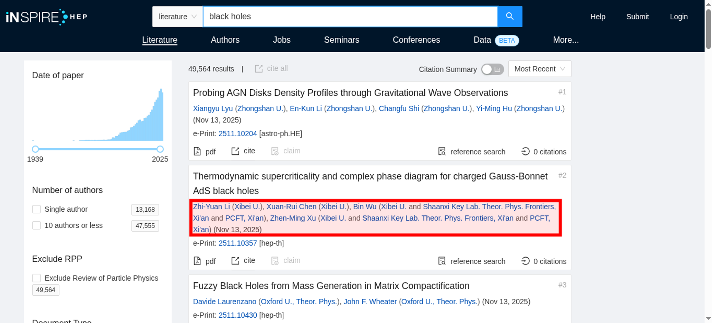
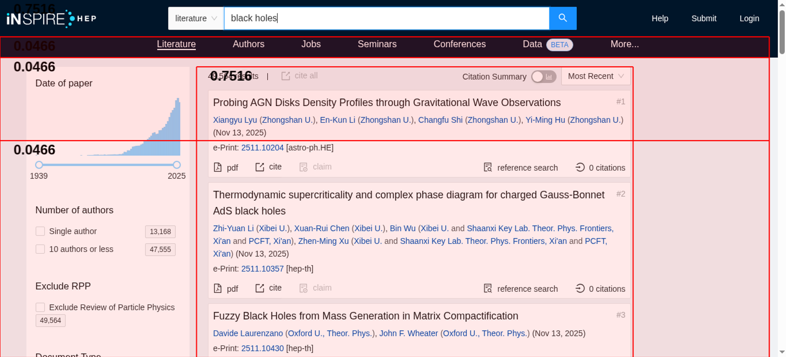

Tested 2025-11-15 02:26:36 using Chrome 141.0.7390.107 (runtime settings).
| Metric | Value |
|---|---|
| Page metrics | |
| Performance Score | 80 |
| Total Page Transfer Size | 1.6 MB |
| Requests | 13 |
| Timing metrics | |
| TTFB [median] | 341 ms |
| First Paint [median] | 1.520 s |
| Fully Loaded [median] | 2.772 s |
| Google Web Vitals | |
| TTFB [median] | 341 ms |
| First Contentful Paint (FCP) [median] | 1.520 s |
| Largest Contentful Paint (LCP) [median] | 1.872 s |
| Cumulative Layout Shift (CLS) [median] | 0.80 |
| Interaction To Next Paint (INP) [median] | 608 ms |
| Total Blocking Time [median] | 67 ms |
| Max Potential FID [median] | 117 ms |
| CPU metrics | |
| CPU long tasks [median] | 2 |
| CPU longest task duration | 172 ms |
| CPU last long task happens at | 1.728 s |
| Visual Metrics | |
| First Visual Change [median] | 1.500 s |
| Speed Index [median] | 1.627 s |
| Visual Complete 85% [median] | 1.866 s |
| Visual Complete 99% [median] | 1.866 s |
| Last Visual Change [median] | 1.866 s |
| Metric | min | median | mean | max |
|---|---|---|---|---|
| Visual Metrics | ||||
| FirstVisualChange | 1.500 s | 1.500 s | 1.511 s | 1.533 s |
| LastVisualChange | 1.833 s | 1.866 s | 1.922 s | 2.066 s |
| SpeedIndex | 1.616 s | 1.627 s | 1.653 s | 1.717 s |
| VisualReadiness | 333 ms | 366 ms | 411 ms | 533 ms |
| VisualComplete85 | 1.833 s | 1.866 s | 1.922 s | 2.066 s |
| VisualComplete95 | 1.833 s | 1.866 s | 1.922 s | 2.066 s |
| VisualComplete99 | 1.833 s | 1.866 s | 1.922 s | 2.066 s |
| Google Web Vitals | ||||
| Time To First Byte (TTFB) | 341 ms | 341 ms | 342 ms | 343 ms |
| Largest Contentful Paint (LCP) | 1.856 s | 1.872 s | 1.933 s | 2.072 s |
| First Contentful Paint (FCP) | 1.512 s | 1.520 s | 1.523 s | 1.536 s |
| Cumulative Layout Shift (CLS) | 0.7982 | 0.7982 | 0.7982 | 0.7982 |
| More metrics | ||||
| firstPaint | 1.512 s | 1.520 s | 1.523 s | 1.536 s |
| loadEventEnd | 2.089 s | 2.149 s | 2.411 s | 2.996 s |
| CPU | ||||
| Total Blocking Time | 67 ms | 67 ms | 68 ms | 69 ms |
| Max Potential FID | 117 ms | 117 ms | 118 ms | 119 ms |
| CPU long tasks | 2 | 2 | 2 | 2 |
| CPU last long task happens at | 1.712 s | 1.728 s | 1.789 s | 1.926 s |
Run 2 SpeedIndex median
Choose HAR:
Use--filmstrip.showAll to show all filmstrips.
 0 s1.4 sCPU Long Task duration 171 ms
0 s1.4 sCPU Long Task duration 171 msThe coach helps you find performance problems on your web page using web performance best practice rules. And gives you advice on privacy and best practices. Tested using Coach-core version 8.1.3.

| Title | Advice | Score | |||||||||||||||
|---|---|---|---|---|---|---|---|---|---|---|---|---|---|---|---|---|---|
| Inline CSS for faster first render (inlineCss) | The page has both inline CSS and CSS requests even though it uses a HTTP/2-ish connection. If you have many users on slow connections, it can be better to only inline the CSS. Run your own tests and check the waterfall graph to see what happens. | 95 | |||||||||||||||
| Description: In the early days of the Internet, inlining CSS was one of the ugliest things you can do. That has changed if you want your page to start rendering fast for your user. Always inline the critical CSS when you use HTTP/1 and HTTP/2 (avoid doing CSS requests that block rendering) and lazy load and cache the rest of the CSS. It is a little more complicated when using HTTP/2. Does your server support HTTP push? Then maybe that can help. Do you have a lot of users on a slow connection and are serving large chunks of HTML? Then it could be better to use the inline technique, becasue some servers always prioritize HTML content over CSS so the user needs to download the HTML first, before the CSS is downloaded. | |||||||||||||||||
| Avoid CPU Long Tasks (longTasks) | The page has 2 CPU long tasks with the total of 291 ms. The total blocking time is 69 ms and 1 long task before first contentful paint with total time of 172 ms. However the CPU Long Task is depending on the computer/phones actual CPU speed, so you should measure this on the same type of the device that your user is using. Use Geckoprofiler for Firefox or Chromes tracelog to debug your long tasks. | 60 | |||||||||||||||
| Description: Long CPU tasks locks the thread. To the user this is commonly visible as a "locked up" page where the browser is unable to respond to user input; this is a major source of bad user experience on the web today. However the CPU Long Task is depending on the computer/phones actual CPU speed, so you should measure this on the same type of the device that your user is using. To debug you should use the Chrome timeline log and drag/drop it into devtools or use Firefox Geckoprofiler. | |||||||||||||||||
| Offenders: | |||||||||||||||||
| Avoid extra requests by setting cache headers (cacheHeaders) | The page has 7 requests that are missing a cache time. Configure a cache time so the browser doesn't need to download them every time. It will save 401 kB the next access. | 30 | |||||||||||||||
| Description: The easiest way to make your page fast is to avoid doing requests to the server. Setting a cache header on your server response will tell the browser that it doesn't need to download the asset again during the configured cache time! Always try to set a cache time if the content doesn't change for every request. | |||||||||||||||||
| Offenders: | |||||||||||||||||
| Always compress text content (compressAssets) | The page has 1 request that are served uncompressed. You could save a lot of bytes by sending them compressed instead. | 90 | |||||||||||||||
| Description: In the early days of the Internet there were browsers that didn't support compressing (gzipping) text content. They do now. Make sure you compress HTML, JSON, JavaScript, CSS and SVG. It will save bytes for the user; making the page load faster and use less bandwith. | |||||||||||||||||
Offenders:
| |||||||||||||||||
| Total CSS size shouldn't be too big (cssSize) | The total CSS transfer size is 107.6 kB and uncompressed size is 569.9 kB. That is big and the CSS could most probably be smaller. | 50 | |||||||||||||||
| Description: Delivering a massive amount of CSS to the browser is not the best thing you can do, because it means more work for the browser when parsing the CSS against the HTML and that makes the rendering slower. Try to send only the CSS that is used on that page. And make sure to remove CSS rules when they aren't used anymore. | |||||||||||||||||
Offenders:
| |||||||||||||||||
| The favicon should be small and cacheable (favicon) | The favicon size is 15.7 kB bytes. That's quite big, can you make it smaller? The favicon has no cache time. | 0 | |||||||||||||||
| Description: It is easy to make the favicon big but please avoid doing that, because every browser will then perform an unnecessarily large download. And make sure the cache headers are set for a long time for the favicon. It is easy to miss since it's another content type. | |||||||||||||||||
| Offenders: | |||||||||||||||||
| Total JavaScript size shouldn't be too big (javascriptSize) | The total JavaScript transfer size is 1.2 MB and the uncompressed size is 3.7 MB. This is totally crazy! There is really room for improvement here. | 0 | |||||||||||||||
| Description: A lot of JavaScript often means you are downloading more than you need. How complex is the page and what can the user do on the page? Do you use multiple JavaScript frameworks? | |||||||||||||||||
Offenders:
| |||||||||||||||||
| Avoid using incorrect mime types (mimeTypes) | The page has 1 misconfigured mime type. | 99 | |||||||||||||||
| Description: It's not a great idea to let browsers guess content types (content sniffing), in some cases it can actually be a security risk. | |||||||||||||||||
| Offenders: | |||||||||||||||||
| Make each CSS response small (optimalCssSize) | https://inspirehep.net/static/css/2.b3bdc1c9.chunk.css size is 103.1 kB (103056) and that is bigger than the limit of 14.5 kB. Try to make the CSS files fit into 14.5 KB. | 90 | |||||||||||||||
| Description: Make CSS responses small to fit into the magic number TCP window size of 14.5 KB. The browser can then download the CSS faster and that will make the page start rendering earlier. | |||||||||||||||||
Offenders:
| |||||||||||||||||
| Don't use private headers on static content (privateAssets) | The page has 1 request with private headers. Make sure that the assets really should be private and only used by one user. Otherwise, make it cacheable for everyone. | 90 | |||||||||||||||
| Description: If you set private headers on content, that means that the content are specific for that user. Static content should be able to be cached and used by everyone. Avoid setting the cache header to private. | |||||||||||||||||
| Offenders: | |||||||||||||||||
| Avoid missing and error requests (responseOk) | The page has 1 error response. The page has 1 response with code 401. | 90 | |||||||||||||||
| Description: Your page should never request assets that return a 400 or 500 error. These requests are never cached. If that happens something is broken. Please fix it. | |||||||||||||||||
| Offenders: | |||||||||||||||||
| Title | Advice | Score |
|---|---|---|
| Cumulative Layout Shift (cumulativeLayoutShift) | You have a poor cumulative layout shift score (0.7982). It is in the Google Web Vitals poor range, with a shift higher than 0.25. You should manually check the filmstrip or video and check if it will affect the user. | 0 |
| Description: Cumulative Layout Shift measures the sum total of all individual layout shift scores for unexpected layout shift that occur. The metric is measuring visual stability by quantify how often users experience unexpected layout shifts. It is one of Google Web Vitals. | ||
| Have a good URL format (url) | The page is using more than two request parameters. You should really rethink and try to minimize the number of parameters. Could the developer or the CMS be on Windows? Avoid using spaces in the URLs, use hyphens or underscores. | 40 |
| Description: A clean URL is good for the user and for SEO. Make them human readable, avoid too long URLs, spaces in the URL, too many request parameters, and never ever have the session id in your URL. | ||
| Avoid too many third party requests (thirdParty) | The page do 15% requests to third party domains (2 requests and 22.3 kB). First party is 11 requests and 1.7 MB. The regex .*inspirehep.* was used to calculate first/third party requests. | 50 |
| Description: Do not load most of your content from third party URLs. | ||
| Avoid unnecessary headers (unnecessaryHeaders) | There are 13 responses that sets a server header. | 87 |
| Description: Do not send headers that you don't need. We look for p3p, cache-control and max-age, pragma, server and x-frame-options headers. Have a look at Andrew Betts - Headers for Hackers talk as a guide https://www.youtube.com/watch?v=k92ZbrY815c or read https://www.fastly.com/blog/headers-we-dont-want. | ||
| Offenders: | ||
| Title | Advice | Score |
|---|---|---|
| Set a referrer-policy header to make sure you do not leak user information. (referrerPolicyHeader) | Set a referrer-policy header to make sure you do not leak user information. | 0 |
| Description: Referrer Policy is a new header that allows a site to control how much information the browser includes with navigations away from a document and should be set by all sites. https://scotthelme.co.uk/a-new-security-header-referrer-policy/. | ||
| Offenders: | ||
| Page info | |
|---|---|
| Title | Literature Search - INSPIRE |
| Width | 1350 |
| Height | 4736 |
| DOM elements | 3438 |
| Avg DOM depth | 23 |
| Max DOM depth | 33 |
| Iframes | 0 |
| Script tags | 5 |
| Local storage | 855 B |
| Session storage | 0 b |
| Network Information API | 4g |
| Resource Hints |
|---|
| preconnect |
| https://piwik.web.cern.ch/ |
Data collected using Wappalyzer version 6.10.54. With updated code from Webappanalyzer 2024-12-27. Use --browsertime.firefox.includeResponseBodies htmlor --browsertime.chrome.includeResponseBodies htmlto help Wappalyzer find more information about technologies used.
| Technology | Confidence | Category |
|---|---|---|
| PHP 8.4.14 | 100 | Programming languages |
| Nginx 1.19.1 | 100 | Web servers Reverse proxies |
| HTTP/3 | 100 | Miscellaneous |
Data from run 2
| Visual Metrics | |
|---|---|
| First Visual Change | 1.500 s |
| Speed Index | 1.627 s |
| Visual Complete 85% | 1.866 s |
| Visual Complete 95% | 1.866 s |
| Visual Complete 99% | 1.866 s |
| Last Visual Change | 1.866 s |
| Visual Readiness | 366 ms |
| Navigation Timing | |
|---|---|
| backEndTime | 343 ms |
| domContentLoadedTime | 1.506 s |
| domInteractiveTime | 1.506 s |
| domainLookupTime | 16 ms |
| frontEndTime | 2.653 s |
| pageDownloadTime | 1 ms |
| pageLoadTime | 2.996 s |
| redirectionTime | 0 ms |
| serverConnectionTime | 220 ms |
| serverResponseTime | 105 ms |
| Google Web Vitals | |
|---|---|
| Time to first byte (TTFB) | 343 ms |
| First Contentful Paint (FCP) | 1.512 s |
| Largest Contentful Paint (LCP) | 1.872 s |
| Cumulative Layout Shift (CLS) | 0.80 |
| Interaction to next paint (INP) | 608 ms |
| Total Blocking Time (TBT) | 67 ms |
| Extra timings | |
|---|---|
| TTFB | 343 ms |
| First Paint | 1.512 s |
| Load Event End | 2.996 s |
| Fully loaded | 3.318 s |
When in time the page main content is rendered (collected using the Largest Contentful Paint API). Read more about Largest Contentful Paint.
| Element type | DIV |
| Element/tag | <div class="mt1"></div> |
| Render time | 1.872 s |
| Element render delay | 1.529 s |
| TTFB | 343 ms |
| Resource delay | 0 ms |
| Resource load duration | 0 ms |
| Load time | 0 ms |
| Size (width*height) | 41820 |
| DOM path | |
| div#root > section > main > div > div > div > div > div:eq(1) > div:eq(1) > div > div:eq(0) > div:eq(1) > div > div > div > div > div > div > div:eq(0) > div > div > div:eq(1)> div#root > section > main > div > div > div > div > div:eq(1) > div:eq(1) > div > div:eq(0) > div:eq(1) > div > div > div > div > div > div > div:eq(0) > div > div > div:eq(1)> | |

The largest contentful paint is highlighted in the image. If no element is highlighted the element was removed before the screenshot or the LCP API couldn't find the element.
0.79815 cumulative layout shift collected from the Cumulative Layout Shift API.
These HTML elements contribute most to the Cumulative Layout Shifts of the page. The higher score, the more layout shift.
| Score | HTML Element |
|---|---|
| 0.75156 | <div class="ant-col ant-col-xs-24 ant-col-lg-17" style="padding-left: 16px; padding-right: 16px;"></div>,<footer class="rc-footer __Footer__ rc-footer-dark"></footer> |
| body > div#root > section > main > div > div > div > div > div:eq(1),body > div#root > section > footer | |
| 0.04659 | <div class="non-sticky" style="margin-top: 64px;"></div>,<main class="ant-layout-content content"></main>,<footer class="rc-footer __Footer__ rc-footer-dark"></footer> |
| body > div#root > section > div > div:eq(1),body > div#root > section > main,body > div#root > section > footer | |

The elements that have shifted place is highlighted in the image (that have a higher value than 0.01). If the element shifted outside of the viewport, you will not see it there. It can be hard to understand what content that has shifted, if that's the case, checkout the video or the filmstrip of the run.
Interaction to Next Paint (INP) is a metric that try to measure responsiveness. It's useful if you are testing user journeys. Read more about Interaction to Next Paint.
The measured latency was 608 ms.
| Event type | pointerover |
| Element type | BODY |
| Element class name | |
| Event target | html>body |
| Load state when the event happened | loading |
Read more about the Long Animation Frames API here here.
The top 10 longest animation frames entries
| Blocking duration | Work duration | Render duration | PreLayout Duration | Style And Layout Duration |
|---|---|---|---|---|
| 123.2 ms | 172.2 ms | 2.1 ms | 1 ms | 1.1 ms |
| https://inspirehep.net/static/js/main.2390fa4d.chunk.js | ||||
Forced Style And Layout Duration: 12 ms Invoker: https://inspirehep.net/static/js/main.2390fa4d.chunk.js | ||||
| Blocking duration | Work duration | Render duration | PreLayout Duration | Style And Layout Duration |
|---|---|---|---|---|
| 70.4 ms | 130.1 ms | 3.4 ms | 3.3 ms | 0.1 ms |
| https://inspirehep.net/static/js/2.4c190662.chunk.js | ||||
Forced Style And Layout Duration: 26 ms Invoker: XMLHttpRequest.onloadend | ||||
| Blocking duration | Work duration | Render duration | PreLayout Duration | Style And Layout Duration |
|---|---|---|---|---|
| 0 ms | 541.7 ms | 3.3 ms | 0 ms | 3.3 ms |
| No availible script information. | ||||
There are no Server Timings.
There are no custom configured scripts.
There are no custom extra metrics from scripting.
How the page is built.
| Summary | |
|---|---|
| HTTP version | HTTP/2.0 |
| Total requests | 13 |
| Total domains | 2 |
| Total transfer size | 1.6 MB |
| Total content size | 4.4 MB |
| Responses missing compression | 8 |
| Number of cookies | 1 |
| Third party cookies | 0 |
| Requests per response code | |
|---|---|
| 200 | 11 |
| 204 | 1 |
| 401 | 1 |
| URL | Type | Transfer Size | Content Size |
|---|---|---|---|
| https://inspirehep.n...4c190662.chunk.js | javascript | 1005.6 KB | 3.0 MB |
| https://inspirehep.n...et/api/literature | other | 339.2 KB | 338.7 KB |
| https://inspirehep.n...2390fa4d.chunk.js | javascript | 131.8 KB | 418.1 KB |
| https://inspirehep.n...3bdc1c9.chunk.css | css | 100.6 KB | 542.1 KB |
| https://webanalytics....cern.ch/piwik.js | javascript | 21.7 KB | 66.4 KB |
| https://inspirehep.net/favicon.ico | favicon | 15.3 KB | 15.0 KB |
| https://inspirehep.n...literature/facets | json | 12.6 KB | 12.3 KB |
| https://inspirehep.n...e1dd6d1.chunk.css | css | 4.4 KB | 14.4 KB |
| https://inspirehep.n...ep.net/literature | html | 2.3 KB | 4.1 KB |
| https://inspirehep.net/config.js | javascript | 1.6 KB | 2.9 KB |
| https://inspirehep.net/manifest.json | json | 608 B | 317 B |
| https://inspirehep.net/api/accounts/me | json | 542 B | 258 B |
| https://webanalytics...cern.ch/piwik.php | plain | 34 B | 0 b |
| Content | Header Size | Transfer Size | Content Size | Requests |
|---|---|---|---|---|
| html | 0 b | 2.3 KB | 4.1 KB | 1 |
| css | 0 b | 105.1 KB | 556.6 KB | 2 |
| javascript | 388 B | 1.1 MB | 3.5 MB | 4 |
| other | 0 b | 339.2 KB | 338.7 KB | 1 |
| json | 0 b | 13.2 KB | 12.6 KB | 2 |
| plain | 216 B | 34 B | 0 b | 1 |
| favicon | 0 b | 15.3 KB | 15.0 KB | 1 |
| Total | 604 B | 1.6 MB | 4.4 MB | 12 |
| Domain | Total download time | Transfer Size | Content Size | Requests |
|---|---|---|---|---|
| inspirehep.net | 4.368 s | 1.6 MB | 4.3 MB | 11 |
| webanalytics.web.cern.ch | 998 ms | 21.7 KB | 66.4 KB | 2 |
| type | min | median | max |
|---|---|---|---|
| Expires | 0 seconds | 0 seconds | 1 year |
| Last modified | 1 week | 1 week | 4 weeks |
Included requests done after load event end.
| Content | Transfer Size | Requests |
|---|---|---|
| html | 0 b | 0 |
| css | 0 b | 0 |
| javascript | 0 b | 0 |
| image | 0 b | 0 |
| font | 0 b | 0 |
| json | 608 B | 1 |
| favicon | 15.3 KB | 1 |
| Total | 15.9 KB | 2 |
Includes requests done after DOM content loaded.
| Content | Transfer Size | Requests |
|---|---|---|
| html | 0 b | 0 |
| css | 0 b | 0 |
| javascript | 0 b | 0 |
| image | 0 b | 0 |
| font | 0 b | 0 |
| plain | 34 B | 1 |
| json | 608 B | 1 |
| favicon | 15.3 KB | 1 |
| Total | 16.0 KB | 3 |
Third party requests categorised by Third party web version 0.26.2.
| Category | Requests |
|---|
| Category | Number of tools |
|---|
Here's a list of domains that didn't match any tool in Third party web. If you are sure they are third party domains, please do a PR to that project. You can also fine tune the list using --firstParty.
| webanalytics.web.cern.ch |
Calculated using .*inspirehep.* (use --firstParty to configure).
| Content | Header Size | Transfer Size | Content Size | Requests |
|---|---|---|---|---|
| html | 0 b | 2.3 KB | 4.1 KB | 1 |
| css | 0 b | 105.1 KB | 556.6 KB | 2 |
| javascript | 0 b | 1.1 MB | 3.4 MB | 3 |
| image | 0 b | 0 b | 0 b | 0 |
| font | 0 b | 0 b | 0 b | 0 |
| other | 0 b | 339.2 KB | 338.7 KB | 1 |
| json | 0 b | 13.2 KB | 12.6 KB | 2 |
| favicon | 0 b | 15.3 KB | 15.0 KB | 1 |
| Total | N/A | 1.6 MB | 4.3 MB | 11 |
| Content | Header Size | Transfer Size | Content Size | Requests |
|---|---|---|---|---|
| html | 0 b | 0 b | 0 b | 0 |
| css | 0 b | 0 b | 0 b | 0 |
| javascript | 388 B | 21.7 KB | 66.4 KB | 1 |
| image | 0 b | 0 b | 0 b | 0 |
| font | 0 b | 0 b | 0 b | 0 |
| plain | 216 B | 34 B | 0 b | 1 |
| Total | 604 B | 21.7 KB | 66.4 KB | 2 |
{kind=link}
{kind=link}
{kind=link}
{kind=link}
{kind=link}
{kind=link}
{kind=link}
{kind=link}